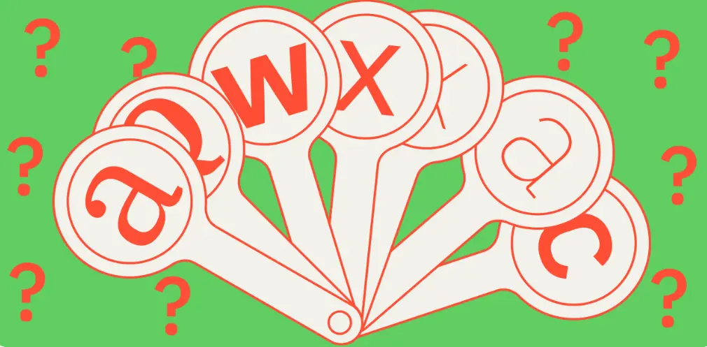

Виды шрифтов: как выбрать лучший вариант для дизайна
Шрифт — не просто набор букв, а важный элемент дизайна. Он формирует стиль и влияет на восприятие информации. Разберём, как выбрать шрифт для проекта и не прогадать.
Шрифты и гарнитуры
Шрифт в графическом дизайне — это набор символов, которые связаны между собой единым оформлением. Гарнитура — семейство шрифтов, схожих по стилю и различающихся по начертанию. Начертание может быть тонким, курсивным, жирным, широким, узким. Например, Times New Roman — это гарнитура, в которой шрифты с начертаниями Times New Roman Regular, Times New Roman Italic, Times New Roman Bold.
Часто эти понятия смешивают и гарнитуру называют шрифтом. Дизайнерам и типографам советуем использовать термины правильно, это поможет избежать недопонимания с коллегами и заказчиками.
Читайте также:
Дизайн-мышление
В статье знакомимся с определением дизайн-мышления, а также разбираемся, как использовать элементы дизайн-мышления при создании продуктов.
Характеристики шрифтов
Засечки
Засечки — короткие перпендикулярные штрихи на концах букв. По этому критерию шрифты делятся на:
- Гарнитуры с засечками — Times New Roman, Garamond, Georgia.
- Без засечек — Arial, Montserrat, Verdana.
На профессиональном уровне есть разделение на шрифты со скруглёнными, острыми, асимметричными засечками.
Бывают шрифты с засечками на части литер и без засечек на другой части набора, например Demi Serif.
Контрастность
Контрастность — разница между горизонтальными и вертикальными штрихами. Различают с высоким и низким контрастом. Чем больше разница в штрихах букв, тем контрастнее шрифт.
Контрастность важна для печати. Для высококонтрастных шрифтов нужно подбирать качественные материалы и использовать средний или большой кегль, иначе на печати тонкие штрихи не будут заметны. Для текста, набранного мелким кеглем, шрифт должен быть низкого контраста.
Апертура
Апертура — «открытость» знака, проще всего её оценить по букве С. Параметр показывает, насколько удобнее читать текст. Чем апертура больше, тем комфортнее.
Основные виды шрифтов в дизайне
По внешнему виду и правилам построения букв принято выделять пять видов шрифтов: антиквы, гротески, брусковые, рукописные и акцидентные.
Антиквы
Антиква — шрифты с засечками, которые больше всего подходят для оформления печатных изданий, в особенности книг, журналов, документов. Благодаря засечкам выстраивается строка, контрастность помогает различать буквы.
Брусковые
Эти шрифты напоминают антикву, но они не имеют яркого контраста между штрихами. Вместо аккуратных засечек грубые и тяжёлые. Их используют как для книжного набора, так и для рекламных решений.
Гротески или рубленные
Гротески — неконтрастные шрифты без засечек. Изначально их создали в противовес антикве и использовали как декоративные, чтобы привлечь внимание в рекламных объявлениях. Со временем они стали самостоятельными и теперь используются повсеместно.
Рублеными шрифтами набирают детские книги — это определено государственным стандартом и санитарными нормами. В них нет отвлекающих элементов, поэтому ребёнку легко читать буквы.
Гротески часто используются в интерфейсах: приложениях, сайтах, лендингах, играх. Дизайнеры советуют использовать шрифты без засечек для читабельности цифровых проектов, потому что электронный формат чтения значительно отличается от печатного. Он требует упрощения, быстрого получения информации, удобства восприятия, низкой зрительной нагрузки.
Рукописные
Название этой группы шрифтов говорит само за себя. Обычно их используют в оформлении обложек альбомов и мемуаров, пригласительных, дипломов. Рукописные шрифты тяжело читать, поэтому ими выделяют лишь несколько элементов, на которых хотят сделать акцент.
Акцентные или декоративные
К этой группе относятся шрифты, основная задача которых — привлечь внимание. Они яркие, причудливые, броские. Встречаются в рекламных заголовках и на обложках журналов.
Подпишитесь на сообщество Info.Jurnal
Если вам важно разобраться в цифровых профессиях и принимать решения без спешки — подпишитесь на сообщество журнала.
Подписаться